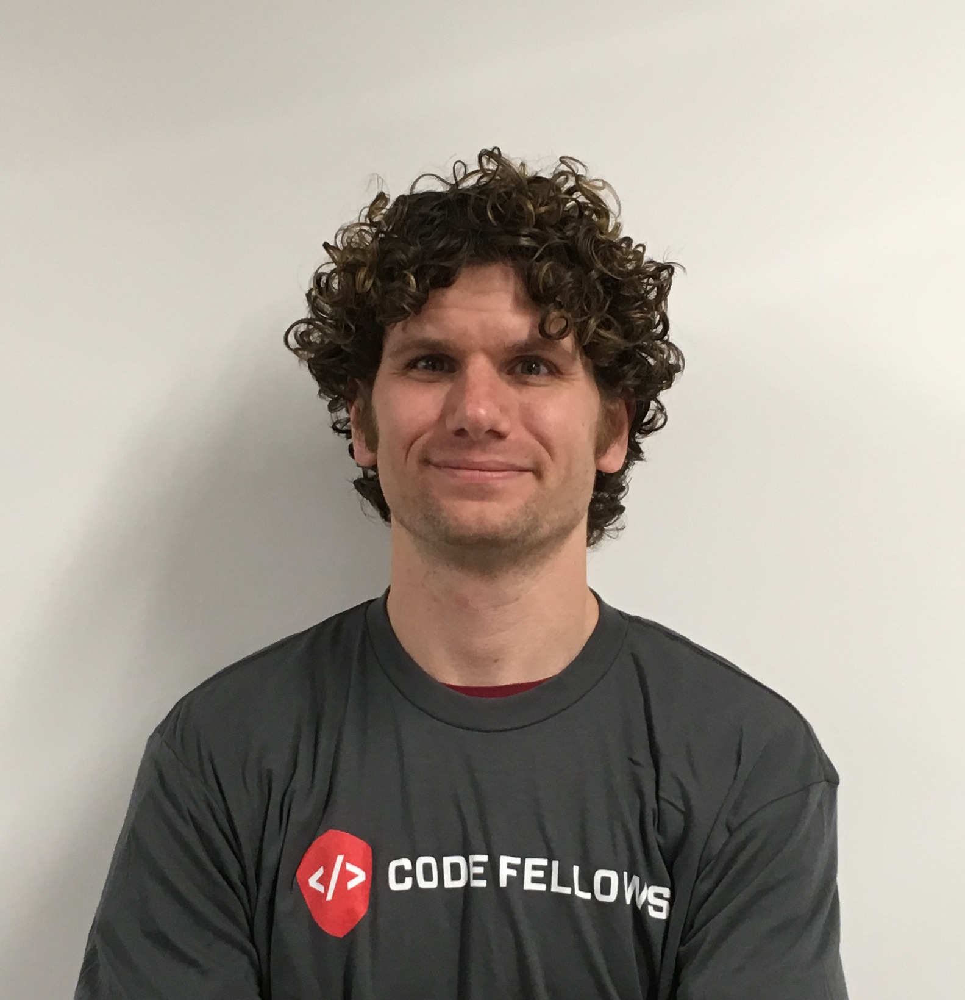
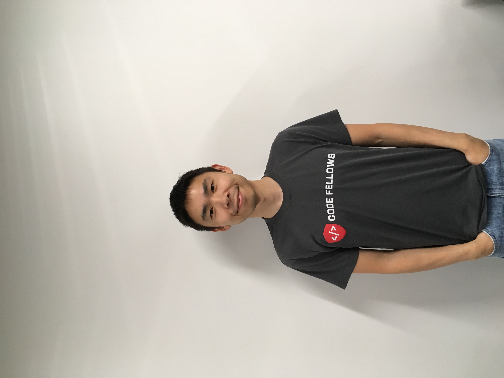
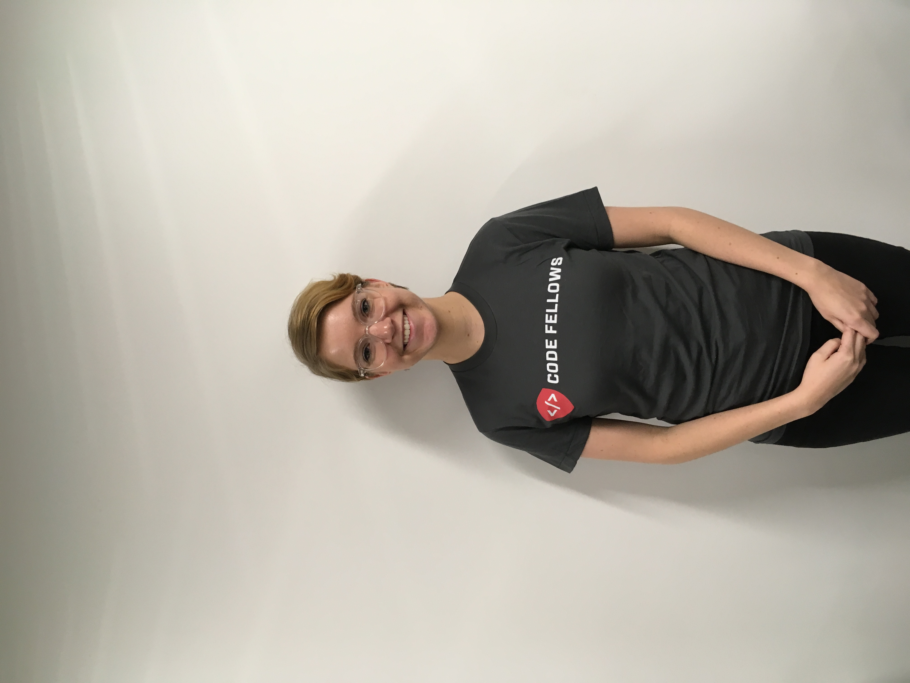

Ford Fowler

Favorite Item to Recycle: Glass Bottles
Having lived in California and Colorado, a quiet calling kept Ford wondering about whether to move to Seattle. After studying Geology at a University in Colorado, he decided to respond to his inner self by packing his bags and make the adventurous journey across the Rockies and become a Seattle transplant. At his arrival, he went straight to Code Fellows to sign up for an immersive development program. Soon afterward, he found 3 roommates to live with sharing one bathroom with a clogged shower drain. When not coding, he wanders around aimlessly.
Irvine Downing
Favorite Item to Recycle: Beer Cans
A former employee from an oil company. Believes the oil industry is in a current downturn and needed to discover a new passion. To make a career change, Irvine decided to move to Seattle and join Code Fellows to invest in the most important asset, one self. He is excited about where this new chapter will take him and looks forward to opening new connections. When he is not coding, he enjoys playing soccer, salsa dance, and working out at the gym. He is also a proud Windows Tablet user while the rest of his teammates use Macs.
Michael Paik
Favorite Item to Recycle: Junk Mail
An HR professional and law student gone rogue. Michael has felt a bit 'contained' these past few years and had an urge to do something amazingly hard: coding. Never had the opportunity to learn something technical and it appeared the opportunity was knocking. So he answered by putting law school on hold and give coding a try. To his surprise, it was still hard but not as hard as he thought. He is a native to Seattle but has lived in many different cities around the U.S. When he is not coding, he is playing with his 1 year old daughter, looking for gluten free eateries, or reading.
Rachel Salazar
Favorite Item to Recycle: Shoeboxes
Then cosmotologist, now a coder. Inspired by her husband who is currently coding in iOS. He is a previous Alumn from Code Fellows. Initially she had an itch to build, create, and develop websites as a personal goal. Decided to take the first step and register for an intro level 101 course and her interest grew deep enough to completely immerse herself in writing code all day, everyday. One of her dislikes is having cats as a pet but loves dogs as well as shopping for high end designer shoes. When she is not coding she actively partcipates at her local church with her family.